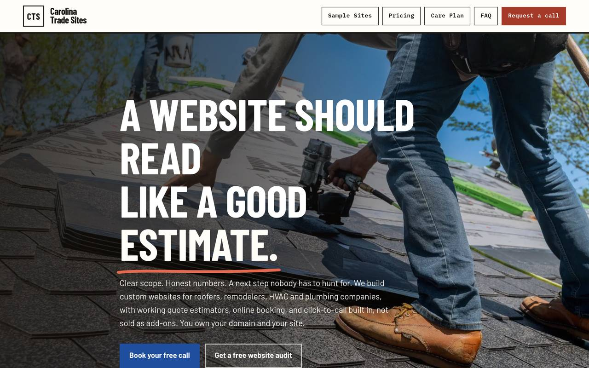

EXP-05
Carolina Trade Sites
Productized website design for Charlotte home-service companies, built by AI and audited by humans.
IN DEVELOPMENT

BUILT
A $2,000 website build with a $79-to-$99/mo care plan, or $299-to-$500 down plus $179-to-$199/mo for 12 months. The hub is live with a 10-block component library, working demo sites, and a real quote-request form. The stack costs about $1 a month to run. Before building, I researched and ranked 9 competing Charlotte web companies.
WHAT BROKE
Two infrastructure lessons. Vercel refuses to deploy commits authored by an AI identity, so every deploy needs commits authored under my name. And phones cache old CSS under the same URL, so a redesigned page can render broken on a customer’s phone until the stylesheet file is renamed. Both are fixed and written down as rules.
HOW I JUDGE IT
Every site is benchmarked against the best comparable work before building, never designed in a vacuum. A site passes when a customer can do the one thing the business needs (call, book, request a quote) from a phone with no friction, and when the price math on the page matches the price math in the contract.
RESULTS
Hub live with live demos and a working request form.
FOR DAREK TO ANSWER
Client count: first paying client goes here.